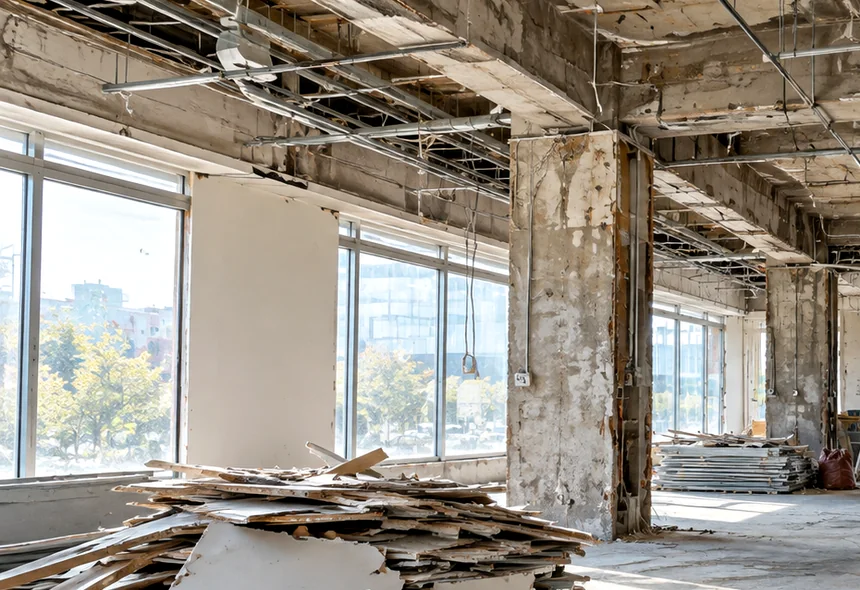
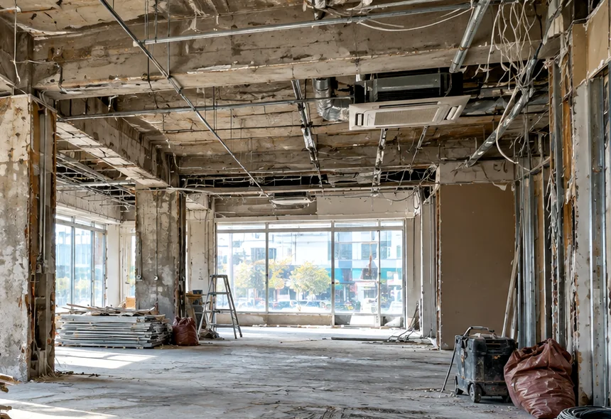
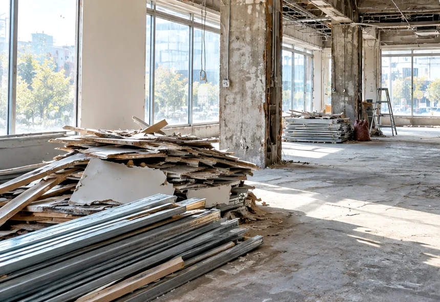
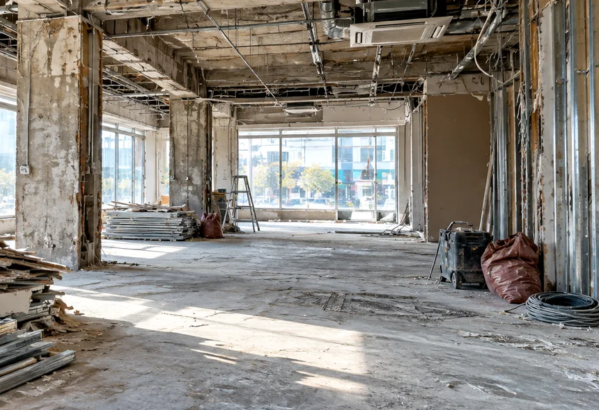
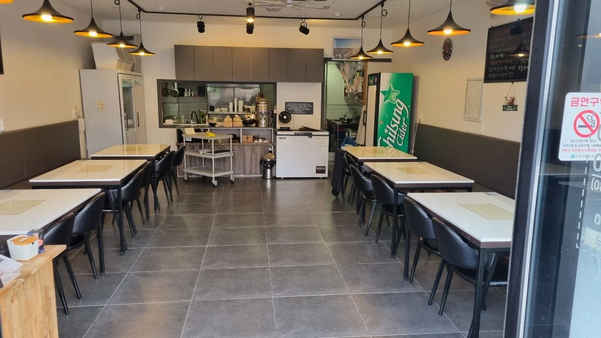
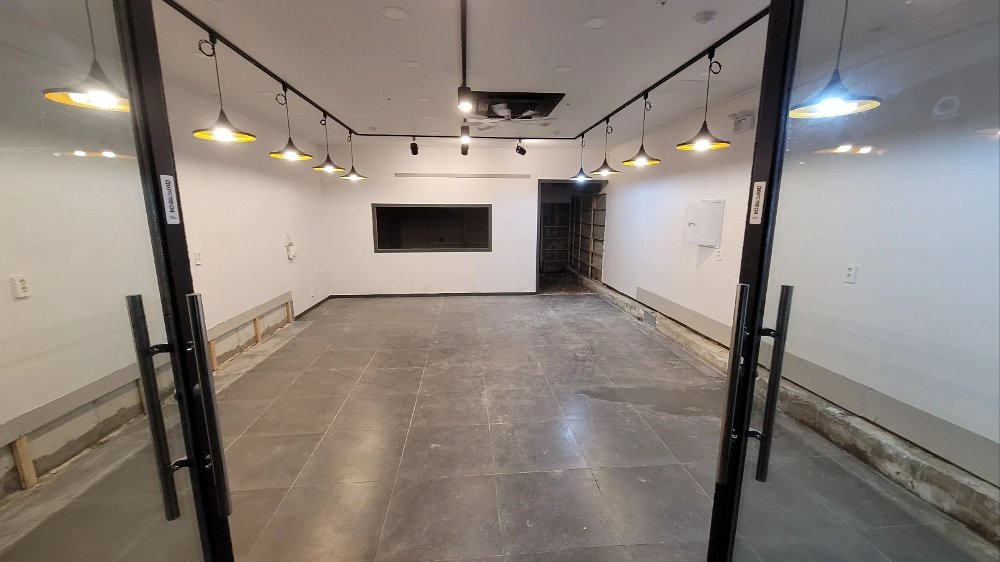
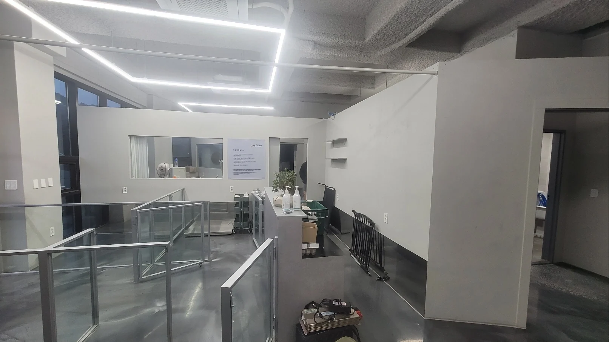
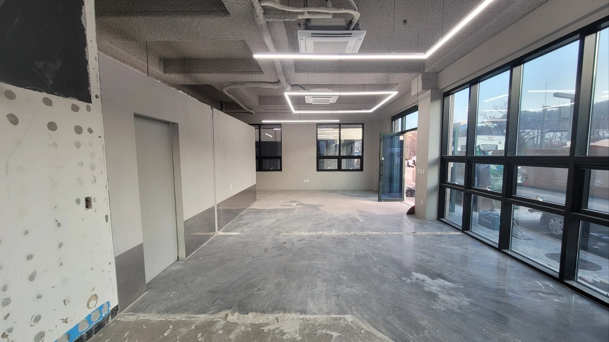

01상계동·노원역 주변 상가 및 매장철거
노원역 주변 상업시설에서는 매장 진열대와 가벽, 천장 마감재, 바닥재, 간판 등의 철거가 필요할 수 있습니다. 음식점의 경우 주방 집기, 조리 설비, 배기 덕트 등의 철거 여부도 확인합니다. 영업을 종료하는 매장의 기존 시설 상태와 건물 관리 규정에 맞춰 철거 범위를 상담할 수 있습니다.
서울 노원구 상가·점포 철거 상담
노원구 철거업체를 찾고 계신다면 상가 폐업철거, 점포 내부철거, 원상복구에 필요한 작업 범위와 견적을 상담해 보세요. 상계동·중계동·하계동·공릉동·월계동의 상가와 학원, 식당, 사무실 등 사업장 유형에 따라 철거 대상과 폐기물 반출 조건을 함께 검토합니다. 임대차 종료일이 정해진 경우에는 점포 반환에 필요한 마감 범위와 공사 일정도 상담할 수 있습니다.
폐업이나 업종변경, 임대차계약 종료로 철거가 필요한 상업시설의 작업 범위를 상담합니다. 기존 인테리어와 설비의 종류에 따라 철거 방식이 달라지므로 실제 사업장 상태를 기준으로 필요한 공사를 구분합니다.

01노원역 주변 상업시설에서는 매장 진열대와 가벽, 천장 마감재, 바닥재, 간판 등의 철거가 필요할 수 있습니다. 음식점의 경우 주방 집기, 조리 설비, 배기 덕트 등의 철거 여부도 확인합니다. 영업을 종료하는 매장의 기존 시설 상태와 건물 관리 규정에 맞춰 철거 범위를 상담할 수 있습니다.

02중계동 학원가의 교육시설은 강의실 칸막이, 책상과 수납장, 게시판, 바닥 마감재, 조명시설 등이 주요 철거 대상이 될 수 있습니다. 학원 폐원이나 이전을 준비하고 있다면 재사용할 집기와 철거할 고정 시설을 구분하고, 필요한 원상복구 범위까지 상담해 보세요.

03공릉동과 월계동의 근린상가, 소형 사무실, 서비스 매장도 점포 규모와 내부 구조에 따라 필요한 작업이 달라집니다. 유리 칸막이와 붙박이 가구, 바닥재, 천장 마감, 전기 설비 등 철거 대상과 보존할 시설을 구분해 상담할 수 있습니다.
상가 철거는 내부 시설물을 제거하는 작업과 임대차계약에 따른 원상복구가 서로 다를 수 있습니다. 계약 당시의 점포 상태와 임대인이 요구하는 반환 조건에 따라 바닥 보수, 벽체 마감, 전기시설 정리 등이 추가로 필요할 수 있습니다.
철거 견적을 상담하실 때 임대차계약서의 원상복구 조항과 임대인 요청사항을 알려주시면 필요한 공사 범위를 구분하는 데 도움이 됩니다. 철거 후에도 유지해야 하는 소방시설, 공용 설비, 기존 배관 등이 있는지 함께 확인할 수 있습니다.
폐업과 동시에 새로운 임차인에게 점포를 넘기는 경우에는 모든 인테리어를 철거해야 하는 것은 아닐 수 있습니다. 기존 시설의 인수 여부와 임대인 협의 내용을 바탕으로 불필요한 철거를 줄일 수 있는 범위도 상담해 보세요.
노원구 상가철거 견적은 면적만으로 결정되지 않습니다. 같은 크기의 점포라도 철거해야 할 시설과 폐기물의 양, 건물 구조에 따라 비용 차이가 발생할 수 있습니다.

특히 여러 점포가 입점한 상가건물에서는 공용 통로의 보양, 엘리베이터 사용 가능 시간, 폐기물 반출 동선을 고려해야 합니다. 이러한 조건을 견적 단계에서 함께 검토하면 공사 범위와 추가 비용 발생 가능성을 보다 구체적으로 확인할 수 있습니다.
사업장 내부 사진과 대략적인 면적, 희망 철거일을 알려주시면 상담에 필요한 기초 정보를 정리할 수 있습니다. 실제 견적과 작업 가능 일정은 현장 조건 확인 후 달라질 수 있습니다.
폐업 일정이 정해졌다면 철거해야 하는 시설과 점포 반환 조건을 함께 전달해 주세요. 견적을 상담하면서 필요한 작업 내용을 구체적으로 확인할 수 있습니다.
상담 및 공사 진행 방식은 현장 상황과 필요한 작업 범위에 따라 달라질 수 있습니다.
다양한 상업시설의 철거와 원상복구 관련 누적 실적을 보유하고 있습니다. 아래 수치는 노원구에 한정된 실적이 아닌 전체 지역 기준 누적 수치입니다.
사업장마다 철거 대상과 원상복구 조건이 다른 만큼 고객의 점포 상태와 임대차 종료 일정을 바탕으로 필요한 작업을 상담합니다.
실제 철거 현장의 시공 전후 모습입니다. 철거 전 내부 시설이 남아 있던 공간과 작업 후 변화된 상태를 비교해 보세요. 실제 공사 범위와 마감 수준은 현장별 계약 조건에 따라 달라집니다.




철거 전 준비사항과 진행 조건을 확인해 보세요.
매장 내부의 가벽, 바닥재, 붙박이 가구 등 일부 시설만 철거해야 하는 경우에도 작업 범위를 상담할 수 있습니다. 보존할 시설과 철거할 부분을 구분해 알려주세요.
점포 반환 예정일과 현재 내부 상태, 필요한 공사 범위를 알려주시면 작업 가능 일정을 상담할 수 있습니다. 실제 일정은 현장 조건과 작업 범위에 따라 협의가 필요합니다.
철거 과정에서 발생하는 폐기물의 종류와 물량, 반출 및 처리 범위를 상담할 수 있습니다. 이동식 집기와 고정 시설은 처리 방식이 다를 수 있으므로 현장 사진과 함께 알려주세요.
정부의 희망리턴패키지 점포철거비 지원은 별도의 신청 자격과 심사 기준이 적용됩니다. 2026년 점포철거비 지원 신청은 10월 21일 18시에 마감되었습니다. 이후 추가 모집 여부는 소상공인시장진흥공단 공식 공고를 확인해야 합니다. 철거 견적 상담과 정부지원사업의 신청 및 심사는 별도로 진행됩니다.
점포 주소, 면적, 내부 사진, 철거할 시설 목록, 희망 공사일을 준비해 주세요. 원상복구가 필요한 경우에는 임대차계약서의 관련 조항과 임대인 요구사항도 함께 전달하시면 상담에 도움이 됩니다.
노원구에서 폐업이나 이전으로 상가를 정리해야 한다면 필요한 철거 범위와 견적을 문의해 보세요. 매장 내부 시설부터 폐기물 처리, 원상복구 조건, 공사 일정까지 사업장 상황에 맞춰 상담할 수 있습니다.
노원구 점포철거와 원상복구에 관한 추가 내용은 노원구 철거업체 상세 안내 에서 확인하실 수 있습니다.